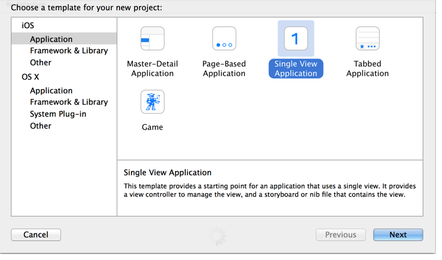

Learn how to set up a basic project using the Ooyala Mobile SDK for iOS and
Xcode.
To complete this tutorial:
- Download the Ooyala Mobile SDK for iOS (version 4.3.0 or newer) and unzip it to
a convenient directory on your system.
- Have Xcode 6 (or newer) installed on your system.
- Log into your Backlot account and navigate to Account >
Developers. The API Key is equal to the
alphanumeric characters preceding the period (".") and is the value to provide for the
PCODE constant in the tutorial. For example, if the API key is
xxxxxxxxxxxxxxxxxxxxxxxxxxxx.0000, then use the first 28 characters
(xxxxxxxxxxxxxxxxxxxxxxxxxxxx) for the PCODE. For
details, see Your API Credentials.
- Log into your Backlot account, and use the following steps to obtain the
EMBED_CODE:
- Navigate to Manage.
- Select an asset.
- Select Embed.
- Obtain the Content ID.
- Have a player domain URL.
Complete this tutorial to learn how to set up an Ooyala Mobile app skeleton app in
Xcode:
-
Start Xcode and select File > New >
Project.
-
Select Single View Application and select Next.

The new project options dialog box appears.
-
Configure the following project options, and click Next.
| Option |
Description |
|---|
| Name |
Enter a name for the project. |
| Organization Name |
Enter the name for your organization. |
| Organization Identifier |
Enter your organization identifier. |
| Language |
Choose Objective-C for this tutorial. |
| Devices |
Choose Universal for this tutorial. |
-
Choose a location for your project and click Next.
The project is created.
-
Select File > Add files to..., and do the following:
-
Open the OoyalaSDK-iOS folder and select the
OoyalaSDK.framework.
-
Activate the Destination > Copy items if needed checkbox,
and click Add.
-
Add the remaining required frameworks to the project:
-
Click the Build Phases tab.
-
Expand Link Binary with Libraries.
-
Click the plus symbol (+) .
-
Select the following frameworks and click Add:
- AVFoundation.framework
- AVKit.framework
- CFNetwork.framework
- CoreGraphics.framework
- CoreMedia.framework
- CoreText.framework
- Foundation.framework
- libxml2.dylib
- libc++.dylib
- MediaAccessibility.framework
- MediaPlayer.framework
- QuartzCore.framework
- Security.framework
- SystemConfiguration.framework
- UIKit.framework
When this step is completed the list of linker libraries is as shown in the
following screenshot:
-
In the left pane, select and open the ViewController.h file.
-
Add the OOOoyalaPlayerViewController class under the import
statements. This is shown in the following example:
#import <UIKit/UIKit.h>
@class OOOoyalaPlayerViewController;
@interface ViewController : UIViewController
-
Under the interface declaration, declare the
OOOoyalaPlayerViewController property with the
nonatomic and strong attributes. This is shown in the
following example:
@interface ViewController : UIViewController
@property (nonatomic) OOOoyalaPlayerViewController *ooyalaPlayerViewController;
@end
-
In the left pane, select and open the ViewController.m file.
-
Import the following header files:
- <OoyalaSDK/OOOoyalaPlayer.h>
- <OoyalaSDK/OOooyalaPlayerViewController.h>
- <OoyalaSDK/OOPlayerDomain.h>
This step is shown in the following example:
#import "ViewController.h"
#import <OoyalaSDK/OOOoyalaPlayer.h>
#import <OoyalaSDK/OOooyalaPlayerViewController.h>
#import <OoyalaSDK/OOPlayerDomain.h>
-
Under the ViewController implementation, use the
NSString class to instantiate the following constants:
-
PCODE
-
EMBED_CODE
- PLAYERDOMAIN
This step is shown in the following example:
@implementation ViewController
NSString * const PCODE = @ "yourapikey";
NSString * const EMBED_CODE = @ "yourcontentid";
NSString * const PLAYERDOMAIN = @"http://yourdomain.com";
Note: The PLAYERDOMAIN specifies the domain from which the content
can play. The domain is a string match; if the domain where the content is hosted contains
the string, playback is allowed. The provided sample app includes Ooyala supplied content
for testing purposes.
-
Create the view controller as shown in the following code sample:
OOOoyalaPlayer *player = [[OOOoyalaPlayer alloc] initWithPcode:PCODE domain:[[OOPlayerDomain alloc] initWithString:PLAYERDOMAIN]];
_ooyalaPlayerViewController = [[OOOoyalaPlayerViewController alloc] initWithPlayer:player];
-
Attach the view controller to the current view as shown in the following code
sample:
- (void)viewDidLoad {
[super viewDidLoad];
// Do any additional setup after loading the view, typically from a nib.
// Create Ooyala ViewController
OOOoyalaPlayer *player = [[OOOoyalaPlayer alloc] initWithPcode:PCODE domain:[[OOPlayerDomain alloc] initWithString:PLAYERDOMAIN]];
_ooyalaPlayerViewController = [[OOOoyalaPlayerViewController alloc] initWithPlayer:player];
}
-
Click Run.
A simulated iPhone appears with an embedded video player. Select the play button
to play the content called with the EMBED_CODE value.
Notes:
- If you have problems viewing a video, make sure the syndication settings are set to
allow iPhone and iPad devices. For more information, see the Publishing Rules section of
the Ooyala Backlot User Guide.
- If the video drops out and the audio continues to play, you might have a low bandwidth
connection. This ensures that viewers can still experience the content. This is the
expected behavior designed by Apple.